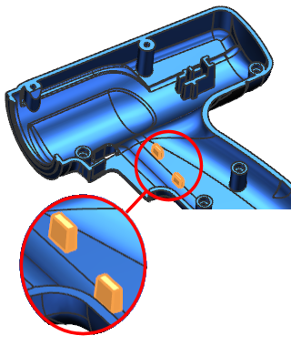

Estimated time to complete: 10–15 minutes
In this activity, you will create a Part Module for the two ribs that will be used to locate the trigger switch in the drill housing. This Part Module feature:
Is a set of construction features within an single part file.
Will contain a sketch and two extrude features.
In another activity you will create a Linked Part Module that is external to the main part file.

Open the Create an internal Part Module activity.